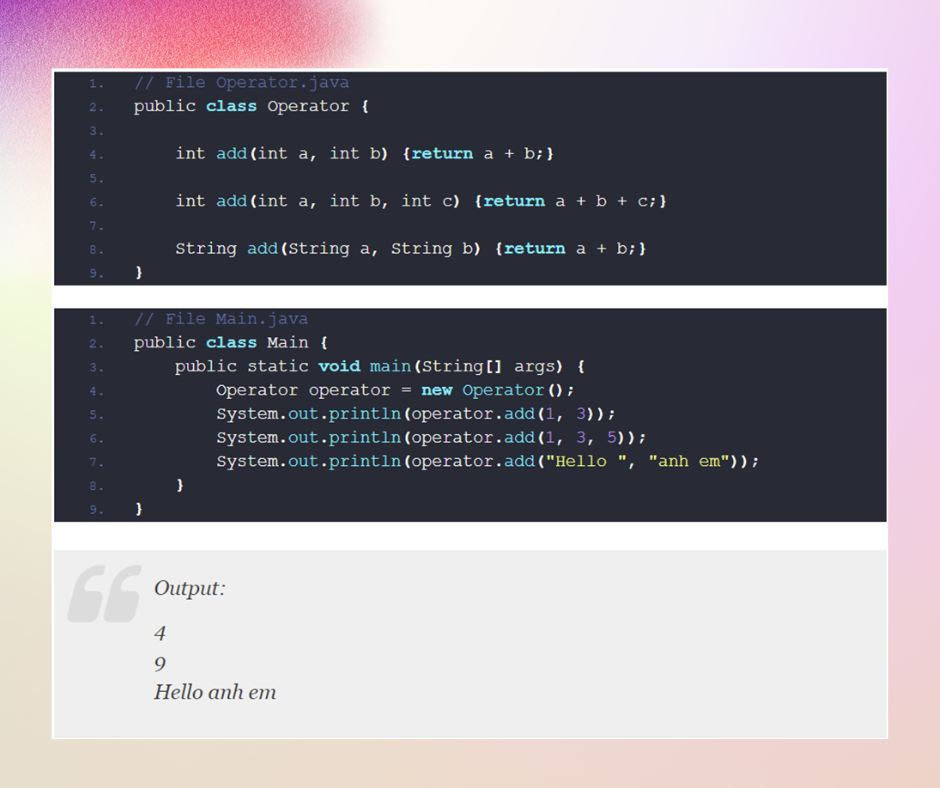
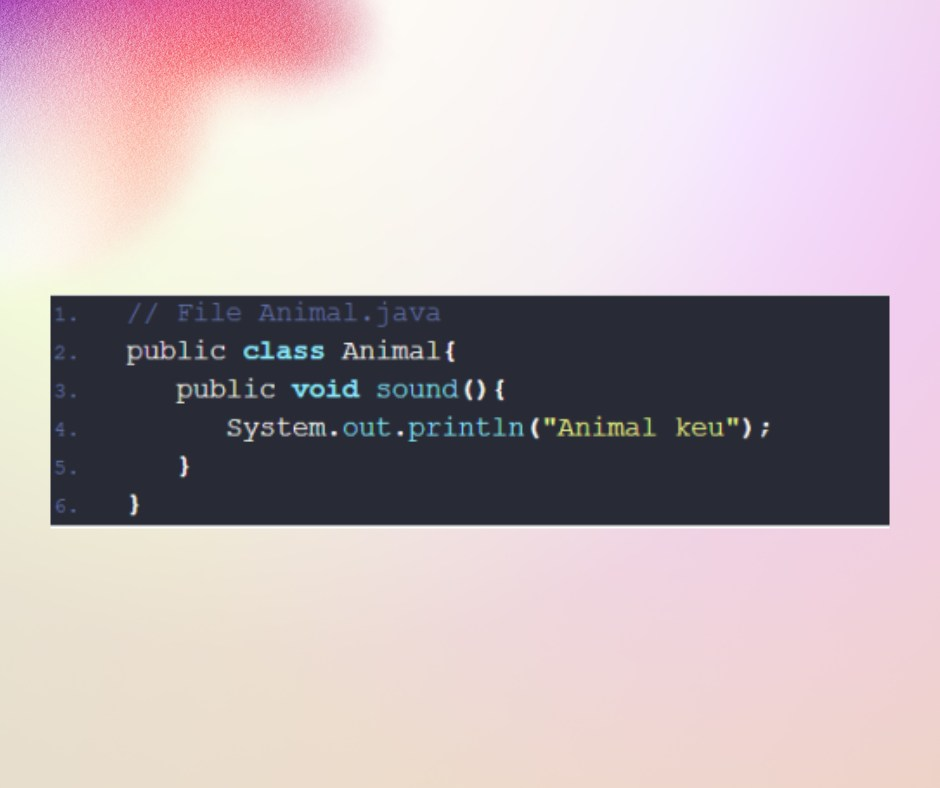
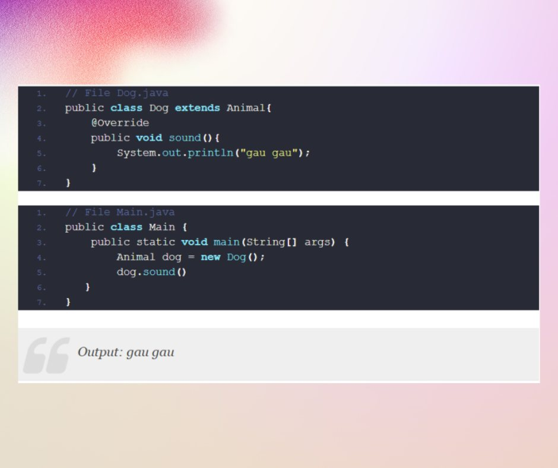

Polymorphism (Final Part)
🎯Chúc mừng các bạn đã đi đến chặng đường cuối về sơ lược OOP của chúng mình.
🔍Cùng Main Code chúng mình tìm hiểu về:
🚩Áp dụng đa hình trong java
📒 Đa hình cho phép thực hiện các hành động khác nhau dựa trên các đối tượng cụ thể. Đa hình cho phép chúng ta định nghĩa một interface – khuôn mẫu và nhiều implement khác nhau. Như ví dụ ở trên chúng ta thấy Animal có method mẫu là sound() và các implement sound() của 2 class Dog và Cat.
🔍Chúng ta có các kiểu đa hình:
📌Đa hình compile time - Method Overloading
📌Đa hình runtime - Method Overrding
Nguồn:
https://shareprogramming.net/da-hinhpolymorphism-trong-java/
https://www.edureka.co/blog/upcasting-and-downcasting-in-java/
https://gpcoder.com/2386-tinh-da-hinh-polymorphism-trong-java/
🚩Đa hình compile time
📖 Đa hình được giải quyết tại thời biên dịch được gọi là đa hình tại compile time. Method Overloading là một ví dụ điển hình.
🔍Method Overloading: Cho phép chúng ta có nhiều phương thức cùng tên nhưng khác nhau về số lượng và kiểu dữ liệu của các tham số đầu vào.
🔍 Chúng ta có 3 phương thức add(), việc chúng ta sử dụng hàm nào là tùy thuộc vào các tham số và được xác định tại thời điểm compile time.
🚩Đa hình tại runtime
📖 Đa hình tại runtime là một quá trình xử lý gọi method được ghi đè tại thời điểm chạy chương trình.
🔍Method Overrding: Cho phép chúng ta định nghĩa lại method của class con mà trước đó nó đã được định nghĩa ở class cha.
🔍Chúng ta sẽ bàn luận lại ví dụ ở đầu bài
🚩Class Animal đã được định nghĩa method sound().
🎯 Anotation @Override được đặt trước các method có ý nghĩa rằng method này đã được định nghĩa ở parent class, nếu các bạn không muốn sử dụng thì các bạn có thể implement lại cũng được.